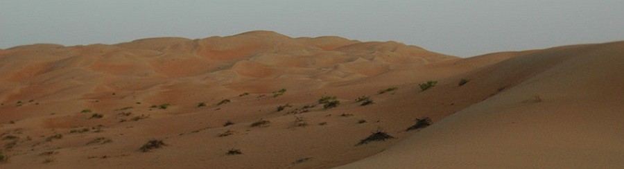
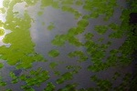

Годината е 2115.
Учените от Националната Астробиологическа Институция за Широкоспектърно-Космическа Валидация на Организми (НАИШ-КВО) са открили нещо, което наричат “интересна планета”. Интересното на планетата е, че в атмосферата ѝ има газове, които типично се произвеждат от живи организми. НАИШ-КВО решават – да пратят екип от астронавти, които да посетят планетата и да изследват ситуацията там – независимо какво ще струва това.
Когато астронавтите достигат планетата след достатъчно дълго пътуване, за да изгледат How I Met Your Mother, Дързост и Красота, както и израстването на едно цвете (последното не е филм) астронавтите слизат от Галактическия Обект за Транспорт на други Обекти (GOTO) и започват да изследват планетата.  Откритията показват, че няма достатъчно висши форми на живот, за да има с кого да си пият Бързия Интоксикант за Рехабилитация и Активизация (БИРА), но за сметка на това големи области от планетата са покрити от водоподобна слуз, в която по особено интересен начин живеят малки организми. Тези организми изглежда имат доста силен потенциал за развитие. Още повече, изследванията показват, че тези организми, докато са активни, могат да бъдат ползвани за произвеждане на Живо Извлечение с Вискозитет Алфа от Бързия Интоксикант за Рехабилитация и Активизация (ЖИВАБИРА). За съжаление организмите са твърде малко към този етап. Затова астронавтите ги нарекли “водонедорасли”. Със сегашното им темпо на развитие, астронавтите няма да доживеят да създават ЖИВАБИРА от водонедорасли.
След дълги изследвания, астронавтите открили, че начина по който организмите се развиват може почти да бъде сведен до един известен, но забравен математически модел, наречен “Играта на живота”. Следователно, астронавтите, с правилната намеса, могат да ускорят значително развитието на водонедораслите. Идеята е за всяка “локва” (така астронавтите наричат областите с водоподобна слуз) да се съберат водонедораслите и да се преподредят, така че да се развиват по-бързо.